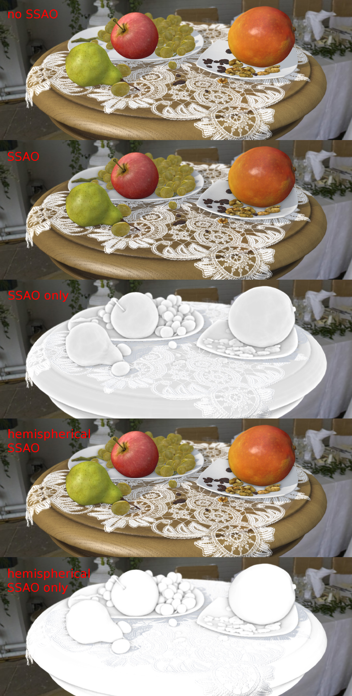

Постпроцессинговые эффекты¶
Размытие при движении¶
Эффект размытия при движении (motion blur) служит целям увеличения реализма интерактивной сцены. Он проявляется при движении камеры или объектов в виде “смазывания” изображения.

Активация¶
Активировать панель Motion Blur во вклдадке Render.
Дополнительные настройки¶
- Factor
- Степень проявления эффекта. Чем выше значение, тем сильнее эффект размытия. Значение по умолчанию 0.01.
- Decay threshold
- Степень плавности размытия. Чем выше значение, тем более резким будет эффект. Значение по умолчанию 0.01.
Глубина резкости камеры¶
Эффект глубины резкости камеры (depth of field, DOF) акцентирует внимание зрителя на части сцены. Проявляется в размытии изображения ближе и дальше от фокуса камеры.

Активация¶
Выбрать активную камеру, перейти на панель ее настроек во вкладке
Camera(Object Data).Далее возможны два варианта:
- На панели
Depth of Fieldв опцииFocusвыбрать объект, на котором будет сфокусирована камера. В этом случае при удалении или приближении к этому объекту будет происходит соответствующая коррекция фокуса камеры. - На той же панели установить ненулевое значение
Distance(в метрах). В этом случае фокус камеры будет располагаться на заданном расстоянии от камеры и перемещаться вместе с ней.
- На панели
Дополнительные настройки¶
- Front
- Расстояние от фокуса до ближней к камере плоскости, за которой происходит полное размытие (в метрах). Значение по умолчанию 1.0.
- Rear
- Расстояние от фокуса до дальней от камеры плоскости, за которой происходит полное размытие (в метрах). Значение по умолчанию 1.0.
- Power
- Степень размытия. Значение по умолчанию 3.0.
Взаимное затенение¶
Эффект взаимного затенения (screen-space ambient occlusion, SSAO) применяется с целью воспроизведения сложного переотражения света от объектов. Пространство между близкими объектами менее доступно для рассеянного света и поэтому затеняется сильнее.
{kind=link}
Активация¶
Активировать панель Ambient Occlusion (SSAO) во вкладке Render и выставить параметр опции Render Shadows в положение AUTO или ON на панели Render > Shadows.
Дополнительные настройки¶
- Radius Increase
- Фактор умножения радиуса сферического сэмплинга при переходе от внутреннего кольца к внешнему. Значение по умолчанию 3.0.
- Use Hemisphere
- Использовать для расчёта затенения полусферический сэмплинг вместо сферического. Помимо этого используется другой закон затенения.
- Use Blur Depth Test
- Если активировано - используется размытие SSAO на основе буфера глубины. Иначе - размытие по квадарту 4х4 по соседним пикселям.
- Blur Depth Test Discard Value
- Влияние разницы глубины сэмлов на их вес в размытии. Используется при активированном параметре
Use Blur Depth Test. Значение по умолчанию 1.0. - Influence
- Степень проявленности эффекта взаимного затенения. Значение по умолчанию 0.7.
- Distance Factor
- Фактор уменьшения проявленности эффекта взаимного затенения с расстоянием. Значение по умолчанию 0.0 (т.е. уменьшения нет).
- Samples
- Количество сэмплов (чем больше, тем лучше качество, но меньше производительность). Значение по умолчанию 16.
Сумеречные лучи¶
Эффект сумеречных лучей (crepuscular rays, “god rays”) симулирует известное природное явление - свечение освещенных областей воздуха.

Активация¶
Активировать панель God Rays во вкладке Render.
Дополнительные настройки¶
- Intensity
- Степень проявленности эффекта. Значение по умолчанию 0.7.
- Maximum Ray Length
- Фактор длины лучей. Определяет шаг сэмплов радиального размытия. Значение по умолчанию 1.0.
- Steps Per Pass
- Количество шагов на один сэмпл. Значение по умолчанию 10.0.
Эффект засветки ярких деталей¶
Эффект засветки (Bloom) проявляется при наличии на экране элементов с большой разницей в яркости. Вокруг ярких деталей создается светящийся ореол.

Активация¶
Активировать панель Bloom во вкладке Render.
Дополнительные настройки¶
- Key
- Интенсивность эффекта свечения.
- Blur
- Степень размытия засветки.
- Edge Luminance
- Граничное значение относительной яркости элемента, выше которого начинает проявляться эффект засветки.
Подсветка контура (outlining)¶
В результате применения эффекта подсветки контура вокруг объекта появляется светящийся ореол произвольного цвета.

Активация¶
Эффект подсветки контура активируется программно через API. Может быть реализован как эффект постоянного свечения, так и затухающего, пульсирующего и любой другой модели. Для включения возможности подсветки объектов необходимо убедиться, что в панели Render > Object Outlining поле Enable установлено в состояние ON или AUTO.
Дополнительные настройки¶
На панели Object > Selection and Outlining:
- Enable Outlining
- Разрешить использование эффекта подсветки контура на конкретном объекте.
- Duration
- Длительность анимации подсветки, сек. Значение по умолчанию 1.
- Period
- Период повторения анимации подсветки, сек. Значение по умолчанию 1.
- Relapses
- Количество итераций анимации подсветки. В случае 0 анимация будет повторяться бесконечно. Значение по умолчанию 0.
- Outline on Select
- Активация анимации подсветки при выделении объекта. Для данного случая необходимо включить опцию
Selectable. При необходимости реализации собственной модели подсветки объекта следует отключить эту опцию во избежание конфликта.
На панели Render > Object Outlining:
- Factor
- Толщина и яркость ореола, окружающего объект. Падает с уменьшением параметра. Значение по умолчанию 1.
При управлении через API настройки на панели Render > Object Outlining воспринимаются как настройки по умолчанию.
Стереоизображение¶
Режим стереоизображения предназначен для просмотра контента в специальных очках и активируется приложением.
Blend4Web поддерживает два стереорежима - анаглифное изображение и HMD (Head-mounted display, шлем виртуальной реальности).
Анаглиф:

HMD:

HMD - экспериментальная возможность, она работает только с камерами типа Eye.
Активация¶
Для работы стереорежима HMD нужно установить runtime-утилиту от Oculus. Версии для Windows и MacOS присутствуют на сайте Oculus в бинарном формате, версию утилиты для Linux пользователю понадобится собирать из исходников самостоятельно.
На сегодняшний день HMD поддерживается в экспериментальных сборках Chromium и в nightly build Firefox.
Чтобы включить стереорежим, нужно выбрать соответствующий пункт в настройках приложения, в третьем столбце справа, как показано на иллюстрации.

Для корректной работы рекомендуется включить полноэкранный режим.
Дополнительные настройки¶
Отсутствуют.
Коррекция цвета¶

Активация¶
Активировать панель Color Correction во вкладке Render.
Дополнительные настройки¶
- Brightness
- Яркость. Значение по умолчанию 0.0.
- Contrast
- Контрастность. Значение по умолчанию 0.0.
- Exposure
- Экспозиция. Значение по умолчанию 1.0.
- Saturation
- Насыщенность. Значение по умолчанию 1.0.
Свечение (glow)¶
Эффект возникновения ореола вокруг светящихся объектов, возникающий вследствие рассеивания света в атмосфере и внутри человеческого глаза.

Активация¶
Добавить в нодовый материал ноду B4W_GLOW_OUTPUT. Для включения возможности свечения в панели Render > Glow Materials опция Enable должна быть установлена в состояние ON или AUTO.
Дополнительные настройки¶
- Small Mask: Intensity
- Интенсивность свечения по малой маске. Значение по умолчанию 2.0.
- Small Mask: Width
- Ширина свечения по малой маске. Значение по умолчанию 2.0.
- Large Mask: Intensity
- Интенсивность свечения по большой маске. Значение по умолчанию 2.0.
- Large Mask: Width
- Ширина свечения по большой маске. Значение по умолчанию 6.0.
- Render Glow Over Transparent Objects
- Отрисовывание эффекта свечения поверх прозрачных объектов. По умолчанию выключено.
Сглаживание¶
Сглаживание (anti-aliasing) необходимо для уменьшения влияния нежелательных артефактов рендеринга (“зубчатости”).

Активация¶
Выбрать один из профилей качества в поле AA Quality на панели Render > Anti-Aliasing:
- None - антиалиасинг отключен,
- Low, Medium, High - применяется антиалиасинг с низкими, средними и высокими параметрами качества соответственно.
Значение по умолчанию: Medium.
Дополнительные настройки¶
Итоговые настройки сглаживания назначаются копмозицией выбора профиля качества антиалиасинга и выбора профиля работы движка. При выборе профиля работы движка действуют следующие настройки:
- низкое качество - антиалиасинг отключен,
- высокое качество и максимальное качество - использовать алгоритм FXAA 3.11 (Fast Approximate Anti-Aliasing, Nvidia).